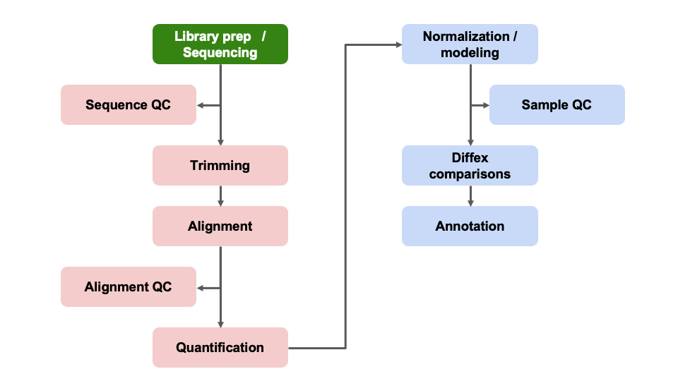

Objectives
- Overview of reproducible research & analysis setup
- Broad introduction to DESeq2 & why it is widely used for
differential expression comparisons
- How to import and review gene count table
Differential Expression Workflow
Today we will proceed through key steps in a differential expression
analysis, starting from a count table that’s similar to what you
generated in the first half of the workshop and similar to one of the
outputs included in the data
that the Advanced Genomics Core delivers for RNA-seq libraries.

Warm-up
To get started, let’s get a sense of what approaches you already use
to compare gene expression:
- If you’ve run a qPCR assay and enjoyed all the pipetting, put up a
green ‘check’. If you’ve run a qPCR assay and needed some time away from
the multichannels, put up a red ‘x’ from the reaction panel.
- If cloning a gene reporter construct (ie: promoter + GFP), worked
for you the first time, put up a green check. If you have a freezer box
full of cloning attempts, put up a red ‘x’.
- If you are ready to learn about bioinformatic tools for comparing
gene expression, put up a green check. If you have some questions that
should be addressed before we get started, use the ‘raise hand’
reaction.
Getting Started in RStudio
Log on to RStudio Server
Open a web browser to the following URL: http://bfx-workshop01.med.umich.edu
You should now be looking at a page that will allow you to login to
the RStudio server:

Enter your user credentials and click Sign In. The
credentials were provided via email, but if you forget yours, a helper
can retrieve it for you, just ask in Slack. You should now see the
RStudio interface:

Create an RStudio Project
In the Computational Foundation workshop we created a project rooted
in a particular directory and stored our data, scripts and output within
that project. Let’s do the same thing, but for the differential
expression part of this workshop.
- To create a project, go to the File menu, and click
New Project…. The following window will appear:

In this window, select Existing Directory. For
“Project working directory”, click Browse…, select the
“RSD_R” folder, and click Choose. This will use the
/home/workshop/user/RSD_R folder as the project
directory.
Finally click Create Project. In the “Files” tab of
your output pane (more about the RStudio layout in a moment), you should
see an RStudio project file, RSD_R.Rproj. All RStudio
projects end with the “.Rproj” file extension.
Note that there is already a data/ folder which contains
the data we will use for these lessons.
Creating an R script
Let’s create an R script file to store all the code we’re going to
run in the forthcoming lessons.
- Click the File menu and select New File and
then R Script.
- Before we go any further, save your script by clicking the save/disk
icon that is in the bar above the first line in the script editor, or
click the File menu and select Save.
- In the “Save File” window that opens, select New Folder.
Name it “scripts”.
- Finally, name your file “diffex” in the “File name”
field.
The new script diffex.R is now in the
scripts folder. You can see that by clicking the
scripts folder in the “Files” pane. And you can go back up
to the main project folder by clicking the .. to the right
of the up arrow in the “Files” pane. By convention, R scripts end with
the file extension .R.
Reproducible research
Today we’ll be exploring some RNA-seq data that is fairly
representative of what we see in the core and start with input files
similar to the count table you generated in the previous steps and
similar to one of the outputs currently being delivered by the Advanced
Sequencing Core.
File organization
As widely discussed, including in a review by Nobel,
2009, file organization and data stewardship are an important parts
of reproducible research.
To follow best practices for file organization for
bioinformatics/computational projects, we should make distinct locations
for:
Such as illustrated in this figure from the Noble review:

To organize our files for our analysis today, we’ll create some
directories in the RSD_R folder which is now our project
root and current working directory. We can already see that there a
data/ folder and we just created the scripts/
folder with the RStudio GUI. Let’s create an outputs/
folder using the dir.create() function in R.
dir.create('outputs')
dir.create('outputs/figures')
dir.create('outputs/tables')
Checkpoint: Please use the green ‘check’ if you
have saved your code file and see the data,
scripts, and outputs directories in the
RSD_R folder and the red ‘x’ if you do not.
Reminder: RStudio code execution
Ctrl+Enter is a standard shortcut in RStudio to
send the current line (or selected lines) to the console. If you see
> in the Console, then R has executed the command. If
you see a +, this means that the command is not complete, R
thinks there is more to your command. You can use the esc to
get out of this state.
Reminder: Object naming conventions
- Cannot start with numbers
- Cannot include dashes
- Cannot have spaces
- Should not be identical to a named function
- Dots and underscores can separate parts of names, alternatively
CamelCase accomplishes this
Tools for Differential Gene Expression analysis
As discussed during the webinar, a common application for bulk
RNA-seq is to test for differential expression between conditions or
treatments, using statistical approaches that are appropriate for
biological data.
While there are several tools that can be used for differential
expression comparisons, we will use DESeq2
in our analysis today.
DESeq2 is one of two tools, along with edgeR,
considered ‘best
practice’ for differential expression. Both tools apply similar
methods that account for the distributions we expect to see for RNA-seq
and are fairly stringent in calling differentially expressed genes,
lowering the risk of investigating genes that were really false
positives (e.g. don’t really have different expression between treatment
groups and therefore are not relevant to the biological process).
Additionally, DESeq2 also has an excellent vignette (link)
from Love, Anders, and Huber, from which our workflow is partially
adapted, and is a good resource when analyzing your own data (see also:
Love, Anders, and
Huber. Genome Biology. 2014.).
Click for additional resources regarding statistical testing and
tool comparison for RNA-seq data
To learn more about statistical testing and what distributions best
model the behavior of RNA-seq data, a good resource is this EdX
lecture by Rafael Irizarry or this lecture by Kasper
Hansen. Another helpful guide is this Comparative
Study for Differential Expression Analysis by Zhang et al. from
2014.
DESeq2 assumptions and requirements
A key assumption of DESeq2 is that biological variance is much
greater than technical variance (especially if best
practices for quality
RNA isolation are followed, including DNase treatment!).
Since calculating variance is key to the statistical approach used
for DESeq2, if we tried to compare two treatment groups with less than
two replicates, we would get an error (as shown in this blog post).
Without replicates, there can’t be statistical significance
(e.g. p-values), but qualitative approaches are an option, like
looking at the top expressed genes after normalization.
Replicates in RNA-seq experiments
A frequent question for RNA-seq projects is “How many replicates do I
need?”.
The general goal of our analyses is to separate the “interesting”
biological contributions from the “uninteresting” technical or other
contributions that either cannot be or were not controlled in the
experimental design. The more sources of variation, such as samples
coming from heterogenous tissues or experiments with incomplete
knockdowns, the more replicates (>3) are recommended.
For a more in depth discussion of experimental design considerations,
particularly for the number of replicates, please read A
Beginner’s Guide to Analysis of RNA Sequencing Data and papers like
this one by Hart et
al that focus on estimating statistical power for RNA-seq
experiments.
Sequencing depth recommendations
A related experimental design consideration is how much sequencing
depth should be generated per sample. This figure shared by Illumina in
their technical talks is helpful to understand the relative importance
of replicates versus sequencing depth.
Generally, for human and mouse experiments, the recommendation is
30-40 million reads per sample for polyA library preps to capture both
highly expressed (abundant) and lowly expressed (rarer) transcripts,
assuming that ~25,000 protein-coding genes would be measured. However,
as the image above shows, sequencing depth has less of an impact than
number of replicates in detecting differentially expressed genes
(DEGs).
Exercise: Building a better understanding of
differential expression analysis
- Post a comment below regarding what key question/misconception
regarding designing an RNA-seq experiment we were able to address
OR
- Post a question that that was NOT addressed but that you hope we
will address in the later modules OR
- Add a thumbs up to your favorite comment(s) to upvote it
Getting started with analysis
Load Packages
Several packages have already been installed on the server, so we can
load them into our R session now. To do that we’ll use the
library function to load the required packages.
library(DESeq2)
library(ggplot2)
library(tidyr)
library(dplyr)
library(matrixStats)
library(ggrepel)
library(pheatmap)
library(RColorBrewer)
library(data.table)
Note: We expect to see some red messages in your console while
these packages are loading
R/RStudio has great resources for getting help, including code
‘cheatsheets’ and package vignettes, like for tidyr.
Since we loaded the libraries into our R session, we can see
documentation out using the ? operator.
?`DESeq2-package`
Checkpoint: If you see the R documentation for
DESeq2 pop up in your ‘help’ panel on the right, please indicate with
the green ‘check’ button. If not please use the red ‘x’ button.
Read Counts
Another key assumption for DESeq2 is that the analysis will start
with un-normalized
counts.
To begin our analysis, we’ll read in the raw count
data file, gene_expected_count.txt which is similar to what
would be generated in the alignment steps (and what you would receive
from AGC). We’ll discuss later a few normalizations that can be helpful
for us to understand how much a gene is expressed within or between
samples, but normalized data should not be used as an
input for DESeq2.
count_table = read.table("data/gene_expected_count.txt", header = TRUE, row.names = 1)
head(count_table, n=2) # look at the top of the table
SRR7777895 SRR7777896 SRR7777897 SRR7777898 SRR7777899 SRR7777900
ENSMUSG00000000001 1041 905 1296 3481 1283 1921
ENSMUSG00000000003 0 0 0 0 0 0
Now that the file is read into R, note that we’ve created a data
frame that includes ‘gene ids’ in ENSEMBL format as rownames and count
data from twelve different samples.
If we think back to the RSEM outputs, the ‘expected_counts’ table may
include fractional amounts due to how the alignment tool resolves reads
mapping to multiple locuses). DESeq2 is expecting the count matrix to
consist only of whole numbers. Recent versions of DESeq2 will handle
this for us, but previous versions did not.
What function, that we saw early on in the Computational Foundations
R lessons, could we use to convert fractional values in
count_table to integers?
Solution
We can use the round() function:
count_table = round(count_table)
Getting help
R and RStudio have a strong community component so if you are getting
an error or wondering how to make a command work or how to perform a
specific task, there is likely already a solution out there. Remember
that Google is your friend, although it can sometimes be a challenge to
figure out what to search for. Key parts of a successful
search:
- Package or command run
R or Bioconductor- The error message if there is one
- Version information
How to get session information to aid in a search:
sessionInfo()
Highly recommend using resources like Bioconductor Support, Biostars, and Stack Overflow,
including threads on specific packages or common bioinformatic
tasks.
I personally use one or more of these resources every
day.
10x Genomics has a helpful 10
tips for biologists learning bioinformatics included in their
resources.
Summary
In this section, we:
- Set up our compute environment
- Learned about DESeq2
- Read a raw count table and saved it as a data frame
Now that we have our count data processed, we can move on to
“unblinding” our data, as the sample names are unique identifiers
generated by a sequencing center and not very informative as far as our
experimental conditions.
Optional content
An important note is that there are several bonus content sections on
the instruction pages, like the two below that we will not be covering
in this workshop, but that may have useful context or be helpful when
you review this material.
Click for alternative DESeq2 input options for RSEM outputs
The package tximport is another optionrecommended the DESeq2
authors to read in the RSEM expected_counts, as this package allows
for the average transcript length per gene to be used in the DE analysis
and, as described by
the author, the tximport-to-DESeqDataSet constructor
function round the non-integer data generated by RSEM to whole numbers.
Click for comparison of RNA-seq data and microarray data
With higher
sensitivity, greater flexiblity, and decreasing cost, sequencing has
largely replaced microarray assays for measuring gene expression. A key
difference between the platforms is that microarrays measure intensities
and are therefore continous data while the count data from
sequencing is discrete. A more detailed comparison between
microarrays and sequencing technologies/analysis is outlined in the online materials
for Penn State’s STAT555 course
Sources
Training resources used to develop materials:
These materials have been adapted and extended from materials listed
above. These are open access materials distributed under the terms of
the Creative
Commons Attribution license (CC BY 4.0), which permits unrestricted
use, distribution, and reproduction in any medium, provided the original
author and source are credited.
